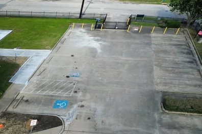
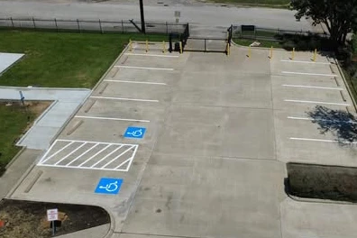
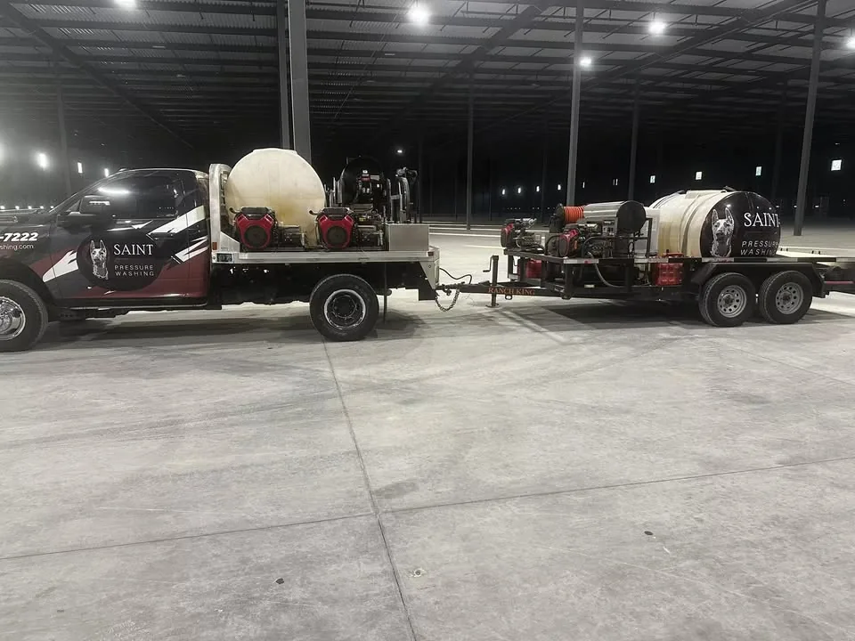

Pressure washing, parking-lot striping and construction cleanup for commercial properties across Greater Houston — plus residential surface cleaning and soft washing. Call today for a free quote & consultation.


BeforeAfterSame lot. New first impression.
Drag the nozzle across. On the left, faded paint and years of grime. On the right, the same lot washed down and restriped — fresh stalls, ADA spaces and a hatched access aisle.
- Scope
- Wash + restripe
- Layout
- Stalls, ADA spaces, access aisle
- Source
- Saint’s own before & after photos
Four services. One crew.
From a full wash-down to the last ADA symbol, commercial properties get the wash and the paint from the same team.
Commercial Pressure Washing
High-flow washing for lots, garages, walks and storefronts.
Details 02Parking Lot Striping
Crisp new lines, stalls and ADA spaces.
Details 03Construction Cleanup
Post-build wash-down, ready for final layout.
Details 04Residential Surface Cleaning
Driveways, exteriors and soft washing for homes.
DetailsTurnaround on a full new-construction wash and striping layout in Tomball, per Saint’s own job post.
Commercial washing, parking-lot striping, construction cleanup and residential surface cleaning.
Quote & consultation on every job. Pricing is based on the area, surface, buildup and what it takes to do it right.
Plenty of lots get done after dark.
A lot of Saint’s work happens under the parking-lot lights — retail lots, county facilities, game-day parking and brand-new construction, with the rig parked right on site.
See the work


“Tony knows what he’s doing.”
Word for word from Saint’s Facebook recommendations and a Cypress neighbor on Nextdoor.
10/10 experience, Tony knows what he’s doing and he’s always on time. 100% recommend coming from a business owner.
I could not recommend Saint Power Washing higher. The level of professionalism is super high. The owner, Tony, is an exceptional communicator and team leader. I was very impressed with their work. They kept the job sites clean and completed all jobs so well and in a very timely manner. I have and will keep hiring the team to come back.
Saint Pressure Washing LLC in Cypress, 281-908-7222. Tony does a GREAT job and is a nice young man.


Get a free quote & consultation
Call or text a photo of the job — lots, garages, walks, new construction or your driveway. Saint will size it up and give you a clear, upfront estimate.